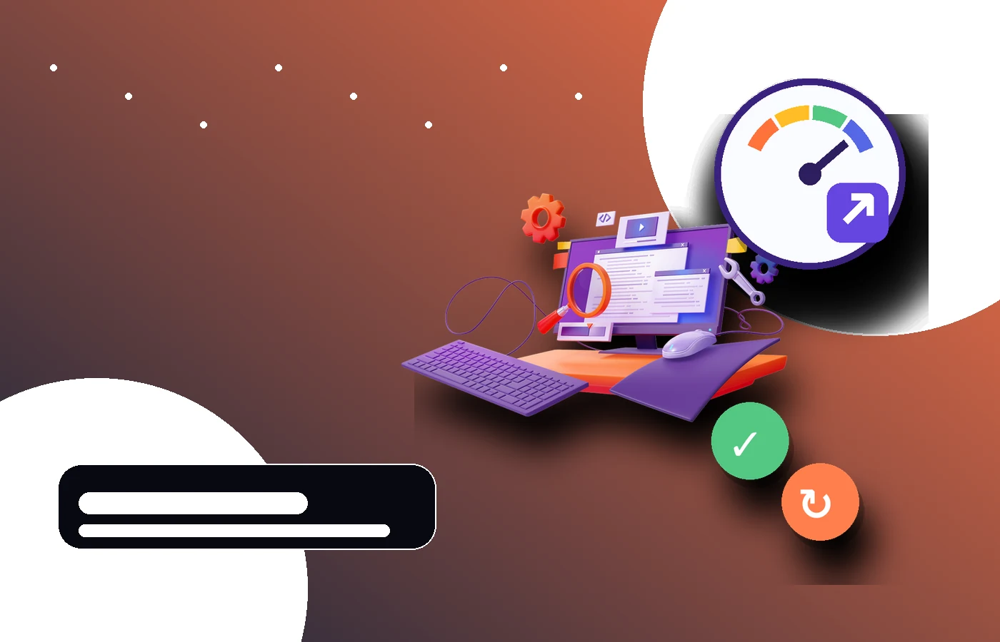
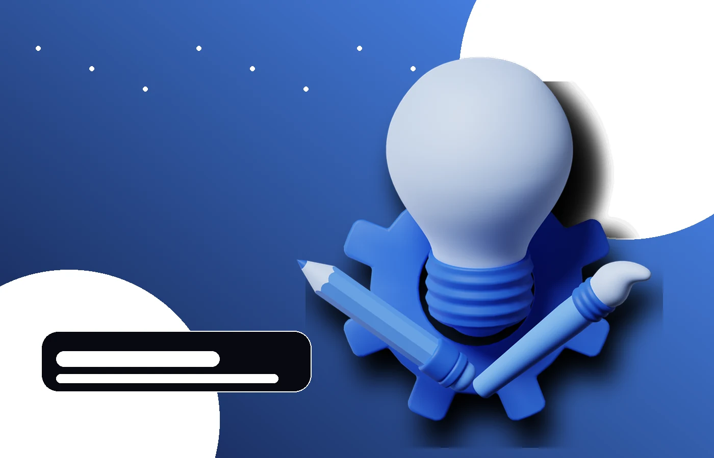

Services
WordPress websites and visual communication, built as one connected system

WordPress websites
Purposeful business websites planned around your content, audience and goals, then built in WordPress for practical day-to-day use.

Website redesign
A focused improvement of websites that feel outdated, inconsistent, difficult to navigate or unnecessarily hard to maintain.
Visual identity
A consistent visual direction for digital and print communication, with typography, colour and graphic elements working together.

Creative support
Flexible design help for businesses and teams that need reliable execution across web, presentation, image and promotional formats.
Practical insights
Clear notes on WordPress, content structure and the details that make websites easier to use.
Need a website, a redesign or ongoing creative support?